1st Grade Worksheets
44 printable 1st Grade worksheets (PDF) with answer keys: reading comprehension passages, reading trails and math centers – no prep, print and go.
44 resources
Subject
By subject: Science & Health · General Knowledge · Reading Comprehension Worksheets

Window Art Workshop Shapes Counting Role Play | Winter Math Center Grade 1

Bird Feeder Counting Math Role Play | Winter Math Center Grade 1

Wildlife Park Winter Feeding Math Role Play | Winter Math Center Grade 1

Cookie Bakery Addition Subtraction Role Play | Winter Math Center Grade 1

Place Value Reading Comprehension Passages | Math Scavenger Hunt 1-2

Fall Farm Safety Reading Comprehension Passages | Health Scavenger Hunt 1-2
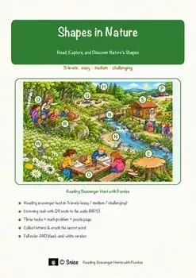
Shapes in Nature Reading Comprehension Passages | Art Scavenger Hunt 1-2
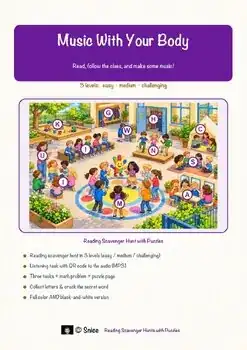
Body Percussion Reading Comprehension Passages | Music Scavenger Hunt 1-2
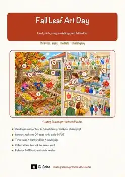
Fall Reading Comprehension Passages | Leaf Art Scavenger Hunt 1st 2nd Grade
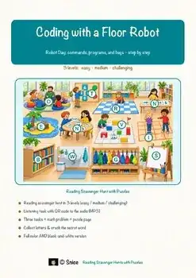
Unplugged Coding Reading Scavenger Hunt | Floor Robot Activity 1st 2nd Grade
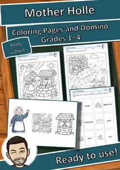
Fairy Tale Workshop: Mother Holle – Coloring Pages and Domino (FREE)
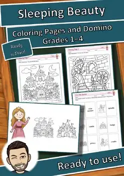
Fairy Tale Workshop: Sleeping Beauty – Coloring Pages and Domino (FREE)
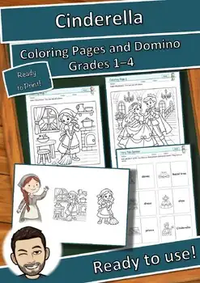
Fairy Tale Workshop: Cinderella – Coloring Pages and Domino (FREE)
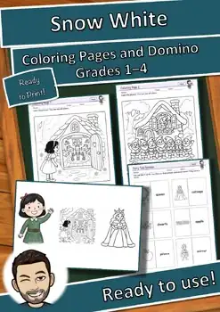
Fairy Tale Workshop: Snow White – Coloring Pages and Domino (FREE)
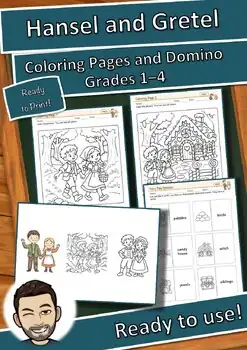
Fairy Tale Workshop: Hansel and Gretel – Coloring Pages and Domino (FREE)
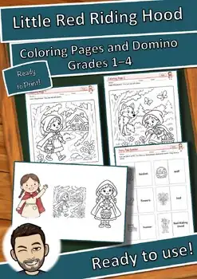
Fairy Tale Workshop: Red Riding Hood – Coloring Pages and Domino (FREE)
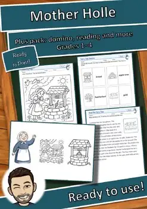
Fairy Tale Workshop: Mother Holle Plus Pack
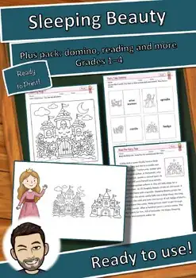
Fairy Tale Workshop: Sleeping Beauty Plus Pack
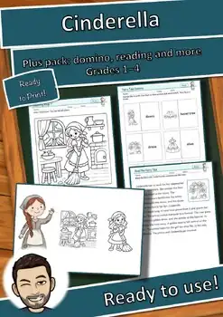
Fairy Tale Workshop: Cinderella Plus Pack
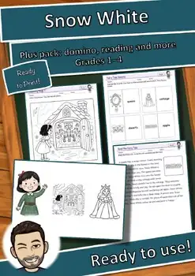
Fairy Tale Workshop: Snow White Plus Pack
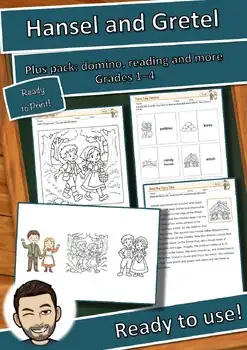
Fairy Tale Workshop: Hansel and Gretel Plus Pack
Fairy Tale Workshop: Red Riding Hood Plus Pack
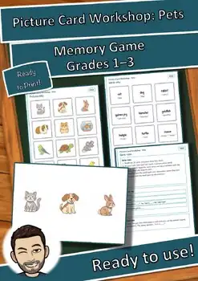
Picture Card Workshop: Pets – Memory Game (FREE)
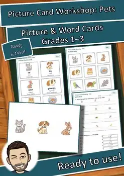
Picture Card Workshop: Pets – Picture & Word Cards (FREE)

Picture Card Workshop: Feelings – Memory Game (FREE)
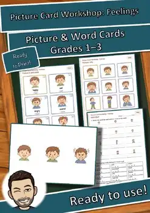
Picture Card Workshop: Feelings – Picture & Word Cards (FREE)
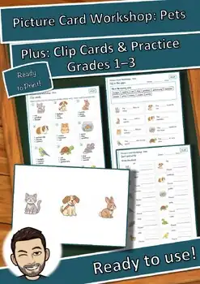
Picture Card Workshop: Pets – Plus: Clip Cards & Practice
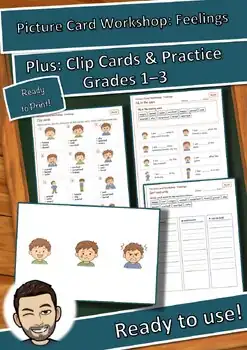
Picture Card Workshop: Feelings – Plus: Clip Cards & Practice
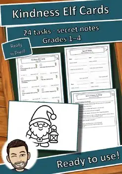
Secret Kindness Elf Cards: 24 Tasks and Secret Notes (Gr. 1-4) FREE
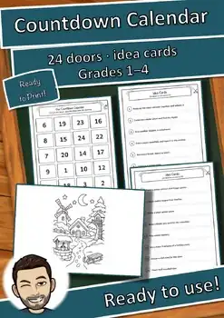
Classroom Countdown Calendar: 24 Doors, Idea Cards (Gr. 1-4) FREE
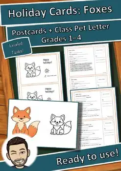
Holiday Cards Fox: Class Critters, 3-Level Writing Prompt
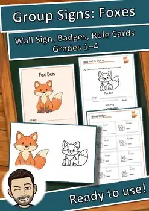
Group Signs Fox: Class Critters Class Animal with Role Cards, Gr. 1-4
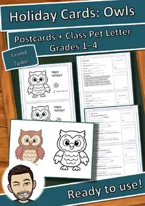
Holiday Cards Owl: Class Critters, 3-Level Writing Prompt
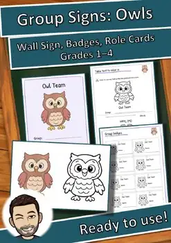
Group Signs Owl: Class Critters Class Animal with Role Cards, Gr. 1-4
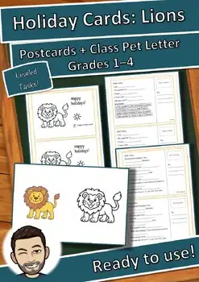
Holiday Cards Lion: Class Critters, 3-Level Writing Prompt
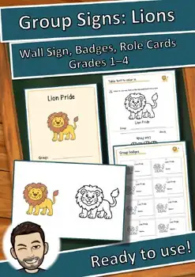
Group Signs Lion: Class Critters Class Animal with Role Cards, Gr. 1-4
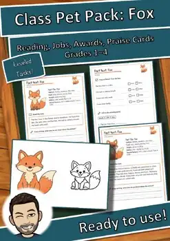
Class Pet Pack Fox: Fact Text in 3 Levels, Class Jobs, Praise Cards, Gr. 1-4
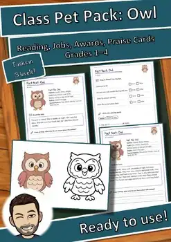
Class Pet Pack Owl: Fact Text in 3 Levels, Class Jobs, Praise Cards, Gr. 1-4
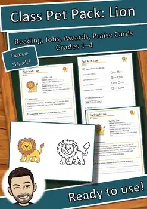
Class Pet Pack Lion: Fact Text in 3 Levels, Class Jobs, Praise Cards, Gr. 1-4
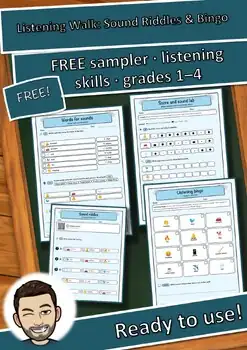
Listening Walk FREE Sampler | Sound Riddles & Listening Bingo | Grades 1-4
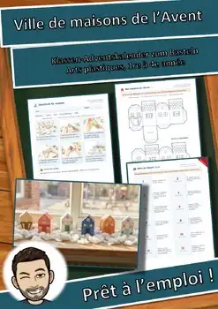
Ville de maisons de l’Avent – Bricolage, calendrier, gabarits, 1re-4e année

Advent House Town: Paper Advent Calendar Craft & Activities, Grades 3-4
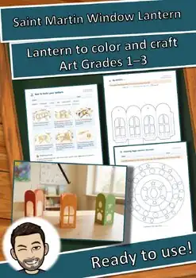
Saint Martin Window Lantern Craft Template | Fall Activity | Grades 3-4
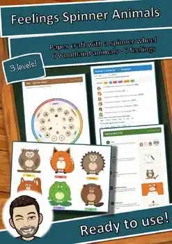
Feelings Spinner Animals Craft | SEL Emotions Activity & Worksheets K-3 ESL
No resources found – try a different search term or filter.